Densidad poblacional
En Montes de Oro cuenta con 13,593 habitantes y una extensión territorial de 244.76 km², calculandose en 55.53 habitantes por km². En Esparza cuenta con 30,068 habitantes y una extensión territorial de 216.80 km², calculando se en 138.69 habitantes por km². En Buenos Aires cuenta con 47,494 habitantes y una extensión territorial de 555.37 km², calculando se en 85.51 habitantes por km². En Puntarenas cuenta con 37,423 habitantes y una extensión territorial de 1842.33 km², calculando se en 20.31 habitantes por km².
Extencion Territorial/Cada canton
El cantón de Esparza cuenta con un área de 216,80 km².Sus límites son al sur colinda con la costa del Océano Pacífico, al norte con Montes de Oro y San Ramón, al este con San Mateo y Orotina, y al oeste con el cantón de Puntarenas. Montes de Oro posee una extensión territorial de 244.76 km² y está.Montes de Oro es el cantón número 4 de la Provincia de Puntarenas, en la costa pacífica de Costa Rica. Ubicado en el norte de la provincia, es uno de los cuatro cantones de la provincia de Puntarenas que no tiene límites con el Océano Pacífico.
Buenos Aires cuenta con un área de 555,37 km² sus límites son al oeste con Brunka, al oeste con Potrero Grande, suroeste con Pilas y al sur con boruca. Cantón de Puntarenas cuenta con un área de 1842,33 km².Sus límites son al norte con montes de oro, al noroeste con san Jerónimo, al este con Espíritu Santo, al suroeste con Caldera y al sur con el Océano Pacífico
Lengua Extrangera y materna
Según la constitución política de Costa Rica en el artículo 76 declara que el español es el idioma oficial de la Nación, no obstante el Estado velará por el mantenimiento y cultivo de lenguas indígenas nacionales, una de las reservas ,según go visit Costa Rica se menciona que los boruca viven en puntarenas desde antes de la llegada de los conquistadores españoles en el siglo XV, también se habla de otras tribus que se unieron con los boruca, estas son los Abubaes, Borucac,coto y Turrucaca. La misma reserva se encuentra a unos 12 kilómetros al sureste de la ciudad de Buenos Aires, y cuenta con casi 60 kilómetros cuadrados de tierra, que se extienden en las estribaciones de la Cordillera de Talamanca.Puntarenas al estar ubicado un una zona portuaria y no muy desarrollada en lo que se refiere a grandes edificaciones tales como las de la capital su habla y acento tiene algunas diferencias, las mas notorias son que tienden a omitir la letra "s" o cambiarla por una "por ejemplo, "ay Dio'mio" y "Que hora es? es la jocho de la mañana", es normal en las areas mas costeras de puntarenas que sin importad la edad de una persona se hablen usando "vos", por ejemplo, "vos ya descargaste el barco?", otras de las diferencias son ciertas palabras que solo son usadas en puntarenas como el muey( muelle), chistate(sistitis), sopiado(sudado), michi(maje), Pura chule( todo bien), casadoras (buses), voy para abajo(dirijirse al centro o puerto), Huevo(amigo muy querido), carramuñoso( Brusco sin pulir), muca(bicicleta), estoy jopipo( estoy lleno), pechero(pesado).
Autor mas reconocido
Francisco Zúñiga Díaz fue un escritor Costarricense nacido el 12 de julio de 1931 en Puntarenas de niño se trasladó con sus padres, Celín Zúñiga Brenes y Josefina Díaz Mora a Esparza, transcurrieron su infancia y juventud, de donde logra absorber del paisaje cálido y del pueblo la poesía y el mensaje humano que transmitió en sus primeros cuentos que se editan en San José, realizó sus estudios secundarios en el Liceo de Costa Rica y los finalizó en el Liceo José Martí de Puntarenas. Algunas de sus obras mas conocidas son "Trillos y nubes" (1964)
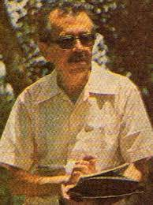
Festividades religiosa
Virgen del carmen
Una de las festividades religiosas que se celebran en puntarenas es la advocación de la Virgen del Carmen o mejor conocida como la Virgen del Mar data del siglo XII, cuando “una comunidad independiente de ermitaños con un apostolado informal y ocasional” formada ahora en el Monte Carmelo (en el actual Israel) (Merton, 2001, p. 154). Lugar que es considerado sagrado desde tiempos precristianos (Raventós, 1998) y ya en el siglo IX A.C. Esta festividad es celebrada el 16 julio según la tradición católica, ya que en esa fecha en el a;o 1251 la Virgen Maria se apareció en Inglaterra a Simon Stock y fue entregada al escapulario del Carmen (Bergier, 1832; Del Carmelo, 2010; Sálesman, 2007; Trese, 2004). La festividad de Santa María del Monte Carmelo fue extendida tanto en el mundo católico que el papa Benedicto XIII la insertó en el calendario universal en 1726 (Raventós, 1998). La devoción de la Virgen del Carmen en Costa Rica está muy extendida y en diversos lugares se llevan a cabo festejos en su honor.
Tradiciones y costumbres
Costa Rica posee una rica y colorida cultura, esto es evidente en las numerosas celebraciones, festividades y fiestas nacionales que los ticos tienen. Aunque el país es famoso por su belleza natural y la gran diversidad, el patrimonio de esta nación centroamericana es casi tan rica como su paisaje
Carnavales de puntarenas
Carnaval de Puntarenas recibe a miles de visitantes de todas partes para bailar toda la noche, disfrutar de un espectáculo de fuegos artificiales y participar en una serie de actividades recreativas. Tradicionalmente, el Carnaval es una temporada festiva, que se realiza entre febrero y marzo.
Desfiles de faroles
El 14 de setiembre se conmemora y se recrean los acontecimientos ocurridos en la Ciudad de Guatemala, la noche previa al día en que se declaró la Independencia del Imperio Español.
Carnavales de Limon
Se celebra en la ciudad de Limón, en el Caribe de Costa Rica. El evento se extiende por toda una semana por lo general se realiza en octubre, durante la pequeña temporada seca de la zona. Ofrece actividades y espectáculos para los visitantes de todas las edades, con sus vibrantes colores, deliciosas comidas y entretenimiento musical.
Cultura afrocaribeña
El 31 de agosto se celebra el Día de la Persona Negra y Cultura Afrocostarricense. En la provincia de Limón, se organizan exposiciones, conciertos, conferencias y otras actividades.
mascaradas
El 31 de octubre es el Día Nacional de la Mascarada Tradicional Costarricense.Las mascaradas son grupos de personas disfrazadas con unas máscaras artesanales que bailan por las calles durante los días festivos, las cuales van acompañados por pequeñas bandas de música llamadas cimarronas.
Romeria
Se celebra el 2 de agosto en honor a la Virgen de los Ángeles, también conocida como la Negrita, patrona del país. Consiste en una peregrinación hacia la Basilíca de los Ángeles ubicada en la Provincia de Cartago, con el fin de rendirle honor a la Virgen de Los Ángeles (nombrada por el Papa Juan Pablo II, Patrona de Costa Rica).
Artesania
Costa Rica es uno de los destinos de vacaciones mejor valorados por los viajeros, sus magníficos paisajes, playas y entornos prácticamente vírgenes no son, sin embargo, los únicos atractivos del país. La artesanía es otro de los grandes exponentes de la identidad costarricense algunas de las creaciones más importantes son las de las carretas decoradas, las mascaradas, la cerámica chorotega y las máscaras de los borucas.
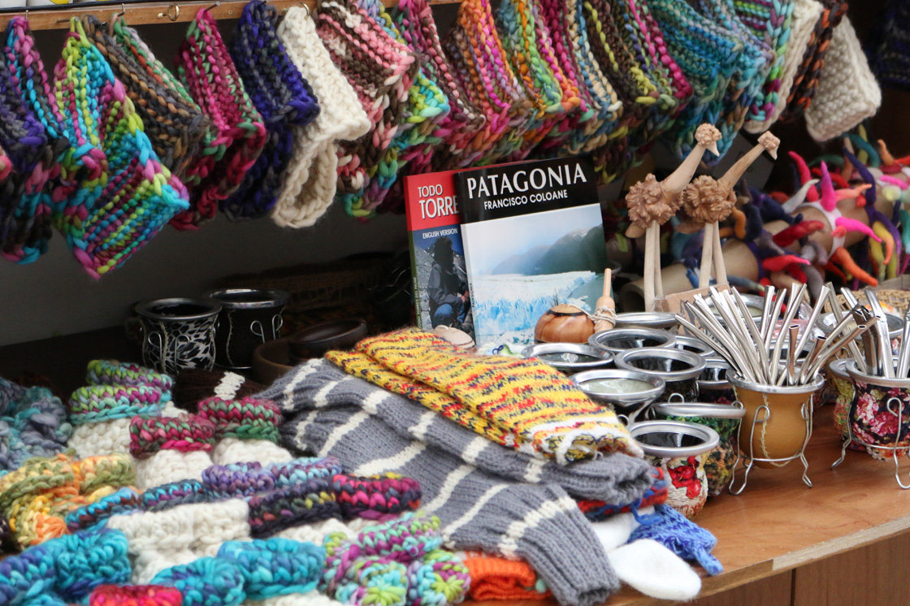
alguna vez te has preguntado cuáles son los tipos de artesanía en costa rica, la artesanía es un producto cultural con identidad diseñado y elaborado ya sea a mano o con herramientas y tecnologías, en nuestro país los oficios y las técnicas artesanales varían según cada región o territorio las podemos reconocer mediante dos categorías: artesanía tradicional y la artesanía contemporánea, la tradicional es una manifestación de nuestro patrimonio cultural inmaterial integra saberes oficios y técnicas que expresan la identidad colectiva cultural y natural del territorio donde se produce, la encontramos en dos tipos tradicional indígena cuyas expresiones se realizan para mantener vivas las prácticas culturales y satisfacer las necesidades cotidianas estéticas y rituales de la comunidad indígena que las produce, es reconocida por transformar la materia prima natural, la tradicional mestiza mezcla conocimientos tradicionales con influencias externas y se crean para satisfacer necesidades productivas estéticas y simbólicas con identidad colectiva, la artesanía contemporánea se crea a partir de oficios técnicas y procesos tradicionales incorpora diseño y tecnologías del mundo contemporáneo basándose en la diversidad cultural de nuestro país, ésta se encuentra como neo artesanía y su venida artesanal ambas usan oficios y técnicas universales pero mantienen la identidad local al incorporar las historias de las comunidades sus paisajes flora y fauna cientos de personas viven de esta actividad en nuestro país aportando a sus familias y sus comunidades por esto varias instituciones impulsamos el sello costarrica artesanal para garantizar a turistas y consumidores un producto costarricense con identidad de calidad con buenas prácticas ambientales y así contribuir con estas familias emprendedoras y pymes costarricenses fortaleciendo nuestra identidad diversa y a sus portadores
Musica y bailes folcloricos
Musica puntarricense
La música costeña puntarenense se distingue por la campera que es la combinación de música campesina con algún ritmo criollo, como por ejemplo, la cumbia colombiana y el tambito generaleño que es más alegre y que se toca con guitarra: esto debido a que durante la colonia, Puntarenas recibió influencia tanto del Virreinato de Nueva España como el Virreinato de Nueva Granada, por lo que esta zona se caracteriza por la celebración de las tonadas, inspiradas en las "fiestas de los novios", las "velas de los angelitos", el Carnaval de Puntarenas, o las leyendas propias de la región. Según Scrib, 2015
Baile del tamborito
Segun Paula Umana Gonzales ell tamborito es un ritmo musical proveniente de la ciudad de Chiriquí, Panamá, que llegó a Puntarenas en el siglo XIX. Era bailado en los lupanares puntarenenses de la época, frecuentados por habitantes de Guanacaste y el Valle Central. El Punto guanacasteco y otras canciones folclóricas costarricenses poseen influencia de este ritmo y, en muchos casos, son una adaptación de este, afirmado por Umana, 2015
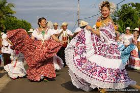
Juegos populares
Uno de los juegos más populares en Buenos Aires de puntarenas es el juego de los Diablitos, este juego es originario de las comunidades indígenas de Boruca y Rey Curré ubicados en Buenos Aires, Este fue declarado patrimonio Cultural Inmaterial de dichas comunidades.
Los Diablitos
Uno de los juegos más populares en Buenos Aires de puntarenas es el juego de los Diablitos, este juego es originario de las comunidades indígenas de Boruca y Rey Curré ubicados en Buenos Aires, Este fue declarado patrimonio Cultural Inmaterial de dichas comunidades.
El origen se remonta a la época colonial y desde allí se ha venido conservando de generación en generación en forma oral, esta práctica posee una serie de reglas y elementos propios de la tradición y con múltiples actores (la comisión de diablos, el diablo mayor, diablos menores, arreadores, músicos, el toro, toreros, matadores, colaboradores, ¨perros¨ y diablas) y que está estrechamente ligada a conocimientos ancestrales y otras destacadas.
El escondido
Otro juego es el Escondido un juego tradicional de Costa rica donde una persona tiene que encontrar a los personas que están jugando a esconderse, el que busca tiene que contar de 1 a 50 aproximadamente según las reglas que se pongan al jugar, mientras el resto de personas se esconden para no ser encontrada por la persona que busca, al final gana la última persona escondida.
En Costa Rica tienen otras reglas adicionales a las del juego original, en este caso el lugar donde cuenta la persona que tiene que buscar se llama ¨Punto¨, las personas que se escondan tienen que tratar de salvar el ¨Punto¨ (lugar donde cuenta la persona), si alguien es descubierto el que busca tiene que volver al ¨punto¨ y decir ¨Punto quemado¨ y el nombre que encontró, este tiene que salir de donde está escondido y gana el último niño que esté escondido.
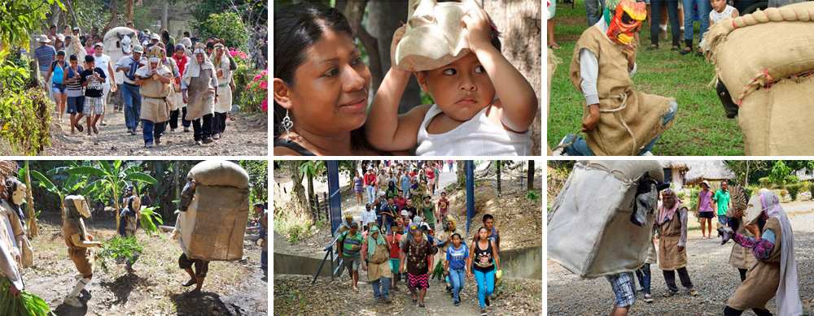
Moneda de costa rica (Colón)
La primera moneda utilizada en Costa Rica fue el peso, cuyo uso empezó en 1839 de la mano del Jefe de Estado en aquel momento, Braulio Carrillo. En cuanto al colón, su llegada tuvo lugar con la reforma monetaria de 1896, que lo estableció como moneda.
Los billetes que circulan en Costa Rica en la actualidad son los de ₡1000, ₡2000, ₡5000, ₡10 000 y ₡20 000, y las monedas en circulación son las de ₡1, ₡5, ₡10, ₡25, ₡50, ₡100 y ₡500.
Aproximadamente ₡2000 colones equivalen 136.53 córdobas o 3.74 dólares , ₡10000 colones equivalen 682.63 córdobas o 18.69 dólares y los ₡50 000 colones equivalen a 3,413.17 córdobas o 93.43 dólares.
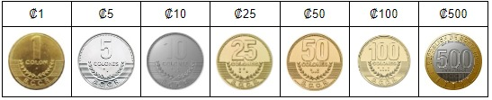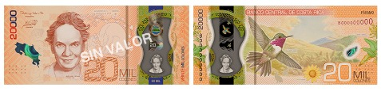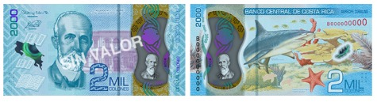
Gastronomía
Dentro de la comida típica que puedes encontrar en Puntarenas, destaca el Vigorón (una mezcla de yuca frita, combinada con vegetales como repollo, zanahoria, jitomate y cebolla marinados en limón). Este platillo suele servirse en un cono de hoja de almendro con chicharrón tostado. En la zona de playa de Puntarenas, el ceviche puntarenense está a la orden del día. Se prepara con pescado (generalmente corvina), cilantro, cebolla, chile dulce, ajo, limón, sal y pimienta. También puedes encontrar en este puerto los tradicionales camarones al ajillo, preparados con camarones frescos pelados y sofritos en manteca y ajo.
El agua de tamarindo es una bebida que encontrarás en muchos establecimientos de comida de Puntarenas, así como el agua de pipa (hecha a base del fruto de la palmera) muy efectiva para calmar la sed y reponer energías. Para combatir el calor lo mejor es probar un granizado, o copo, que es hielo raspado endulzado con sirope, generalmente de cola. Son muy comunes en Costa Rica y en Puntarenas se disfrutan con leche en polvo y condensada. También pueden llevar helado. Este tipo de granizado se conoce como "Churchill". Para la sobremesa siempre es buena opción un dulce de la región hecho de arroz licuado con canela, nuez moscada, hielo, leche y azúcar al gusto, conocido como Resbaladera. Para probar la comida a base de productos del mar, La Casa de los Mariscos es uno de los restaurantes más populares de la zona. Por su ubicación en el malecón, podrás probar platillos a base de mariscos y exóticos cocteles, mientras te relajas viendo el mar. Price travles, 2017
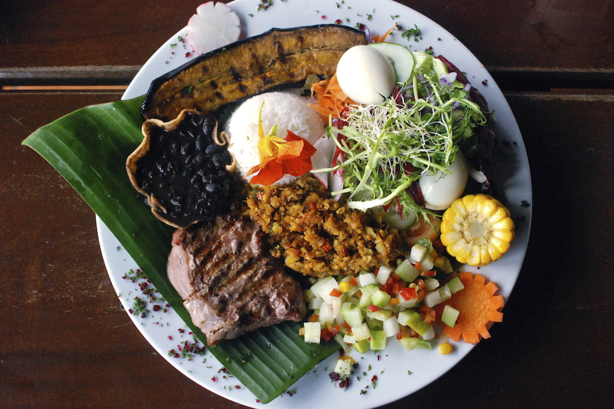
Comercio
El comercio en Puntarenas es de las actividades económicas más importantes del país, que se basa principalmente en el turismo, la pesca e industria según la Universidad de Castro Carazo (2023), Pero también existe la Agricultura, Ganaderia y la minería Algunas de las principales actividades económicas son:
El turismo: Puntarenas es un destino turístico recorrido por muchas personas anualmente, pues es también una escala de cruceros. Según Booking.com (2023), la ciudad de Puntarenas cuenta con el Paseo de los Turistas, una avenida costera con restaurantes, hoteles y otros servicios. Además, la provincia tiene numerosas islas, ensenadas y playas.
La pesca: Puntarenas cuenta con varios puertos pesqueros y embarcaciones siendo de los mejores proveedores, con una flota de más de 500 embarcaciones que se dedican a la captura de varios peces como el atún, camarón, langosta, sardina, corvina y otras especies. También, abastece el mercado nacional y hace exportaciones de productos pesqueros.
La agricultura: según INCOP (2023) se basa en los cultivos de arroz, piña, palma aceitera, banano, caña de azúcar, frijol, tubérculos, maíz y otros productos. Estos cultivos se realizan principalmente en el cantón de Buenos Aires.
La ganaderia: se dedica a la producción de leche y carne bovina. Esta actividad se desarrolla sobre todo en los cantones de Esparza, Montes de Oro y Buenos Aires.
La industria: se concentra en la ciudad de Puntarenas y en algunos cantones como Esparza. Entre las industrias se encuentran las procesadoras de pescado, las empacadoras de frutas, las fábricas de aceite de palma, las refinerías de azúcar y las plantas eléctricas
La mineria: según ECURED (2023) se da en la zona sur de la provincia, de donde se extrae oro, zinc, hierro y plata. Esta actividad es muy limitada y tiene un impacto ambiental negativo.
En 2020 surgió la pandemia del Covid-19 según nos cuenta el Repositorio Institucional de la Universidad Técnica Nacional (2021), que ha provocado una disminución de la demanda internacional y el cierre temporal de algunas actividades económicas. Sin embargo, se han implementado medidas para apoyar a los sectores productivos y reactivar la economía local además de disminuir los problemas provocados por la pandemia del Covid-19.
Costa Rica exporta varios productos a nivel nacional o internacional, en varios sectores como la industria, sector de agricultura y otros servicios, los productos que se destacan según los estudios económicos de la OECD (2020) son:
Productos industriales: los productos que se fabrican y exportan según esencial Costa Rica (2023) se encuentran los medicamentos, equipos médicos, microprocesadores, plásticos, textiles, materiales de construcción y fertilizantes.
Productos de servicios: estos servicios son los centros de llamadas, los centros de datos, los laboratorios de investigación, las certificaciones ambientales y los paquetes turísticos.
Productos de Agriculturas: Estos exportan lo que producen como el café, el banano, la piña, el azúcar, el cacao y otros frutos tropicales. Estos productos se exportan a diferentes mercados, especialmente a Estados Unidos, Europa y Asia.
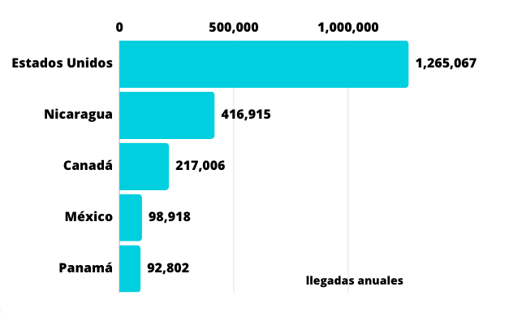
Turismo
Puntarenas estas llena de lugares turisticos como el Parque Nacional Corcovado, este es descrito como una experiencia para los amantes del medio ambiente que quieran aventurarse y que estén dispuestos a recorrer caminos con cierto grado de dificultad para ser testigos de las maravillas de la naturaleza en su sitio oficial donde proporcionan mapas y precios para las guias turisticas dentro del lugar las cuales son Nacionales y residentes: ¢1.808, Extranjeros no residentes: $16,95, Zona de acampar: $4,52 (estacion San Pedrillo), ¢565 Niños nacionales y residentes (edad de 2 a 12 años), $5,65 Niños no residentes (edad de 2 a 12 años). Otros sitios turisticos son el Parque Marino del Pacifico es un órgano con desconcentración máxima del Ministerio del Ambiente y Energía, creado mediante el articulo 4 de la Ley 8065, con el objetivo de propiciar el desarrollo humano sostenible.
La mayor parte del ingreso es por parte de personas estadounidenses que son las que mas visitan Costa rica con una cantidad estimada de 1.265.067 llegadas anuales , en segundo lugar estan los nicaraguenses con un 416.915, le sigue Canadá con 217.006 llegadas anuales, Mexico con 98.918 llegadas anuales y por ultimo Panamá con 92.802 llegadas anuales.(datosmacro, 2019)
Innovacion tecnologicas
En Puntarenas se firmó un contrato para la construcción de un hospital moderno, novedoso y tecnológico, el hospital Monseñor Víctor Manuel Sanabria.El hospital ofrecerá nuevos servicios a pacientes con cáncer y patologías cardiovasculares: Quimioterapia: Fortalecimiento del tratamiento para pacientes con cáncer que ya no deberán trasladarse hasta el hospital México para recibir sus tratamientos. Cardiología Intervencionista: Permitirá la instalación de un equipo médico llamado angiógrafo para el diagnóstico y tratamiento de patologías cardiovasculares. Cuenta con los siguientes servicios
- Emergencias con capacidad para 43 camas
- Hospitalización
- Bloque Quirúrgico de 12 quirófanos
- Consulta y cirugía ambulatoria
- Atención de partos en cuatro salas
- Servicios de apoyo Clínico y administrativos
- Consulta Externa con 64 consultorios
Entre las nuevas especialidades que el hospital de Puntarenas ofrece:
- Optometría
- Hemodinamia
- Cardiología
- Medicina Crítica y cuidados intensivos
- Ginecología y oncología
- Hospitalización domiciliaria
- Quimioterapia
Las áreas de atracción que beneficia el hospital de Puntarenas son:
- San Rafael- Chomes – Monteverde
- Peninsular
- Barranca
- Chacarita
- Esparza
- Montes de oro
- Garabito
- Orotina- San Mateo
- Colorado
Hospital de Montes de Oro
El hospital de Montes de Oro ha realizado varias mejoras en las condiciones del servicio de laboratorio, farmacia, rayos X y emergencia. Estas mejoras incluyen:
- Laboratorio: El laboratorio ha sido equipado con nuevos equipos que permiten realizar análisis más precisos y rápidos. Esto permitió mejorar el diagnóstico y tratamiento de los pacientes.
- Farmacia: La farmacia ha sido ampliada y cuenta con un mayor stock de medicamentos. Esto ha permitido reducir los tiempos de espera para los pacientes que necesitan medicamentos recetados.
- Rayos X: El departamento de rayos X ha sido equipado con nuevos equipos que permiten realizar exámenes más precisos y detallados. Esto ha permitido mejorar el diagnóstico de enfermedades.
- Emergencia: El departamento de emergencia ha sido reforzado con más médicos y enfermeras. Esto ha permitido reducir los tiempos de espera para los pacientes que necesitan atención urgente.
Inagura zonas de internet inalambrico
En el Paseo de los Turistas tendrá 15 puntos de acceso desde la salida del ferry hasta la plaza de deportes en Barranca, con una velocidad de 100Mbps a 300 Mbps y con un alcance de 300 m a la redonda por cada uno de ellos. Telecable es la adjudicada por la Sutel para implementar el servicio de internet. Esparza y Garabito ya cuentan con el servicio en sus comunidades.
Como parte del proyecto “Espacios Públicos Conectados” liderado por la Superintendencia de Telecomunicaciones (SUTEL), el reconocido Paseo de los Turistas ubicado en la provincia de Puntarenas cuenta a partir de este sábado con internet inalámbrico gratis para todos sus visitantes.
Educacion y transporte
Mejoran la educación en Puntarenas con ¢3.699,6 millones se han realizado mejoras en centros educativos en Isla Chira, Lepanto, Montes de Oro, Corredores, Coto Brus, Quepos, Buenos Aires y Osa.
Actualmente, cinco obras en infraestructura educativa se encuentran en proceso de contratación (¢7.926,7 millones) y 11 en ejecución (¢4.823 millones).
Transporte
Los lugareños utilizan los autobuses públicos como uno de los principales medios de transporte, y tanto los viajes entre semana como en días festivos están garantizados.Puntarenas cuenta con una empresa de transporte llamados Empresarios Unidos De Puntarenas S.A
Los medios de transporte de costa rica son:
- Taxis y otros servicios de traslado.
- Transporte en autobús
- Ferris
- Sistemas de transporte masivo.
- Ferrocarriles
Industrias en costa rica
Martec INdustries
Desde 1989, Martec Industries, Inc. ha ofrecido marcas de calidad de suplementos nutricionales a consumidores conscientes de la salud en todo el mundo. Martec ha sido reconocido por organizaciones que exigen un compromiso con la calidad y la dosificación confiable y precisa de objetivos específicos, así como de amplio espectro, vitaminas, minerales, hierbas y suplementos nutricionales especializados.
Sardimar
En procesos controlados y de una alta calidad, la empresa desarrolló varias presentaciones y marcas que se posicionaron muy bien en el mercado centroamericano. A partir de 1983, Zapata Corporation vendió sus acciones de Sardimar a un grupo de inversionistas costarricenses. Desde entonces, Sardimar ha sido una empresa 100% nacional, con una visión de largo plazo y un sólido enfoque en calidad e innovación.
Coopemontecillos
Coopemontecillos R.L fue fundada en 1965, es una cooperativa formada por productores ganaderos y trabajadores. La Cooperativa ofrece productos cárnicos de calidad mundial para contribuir al bienestar de clientes, asociados y la comunidad.
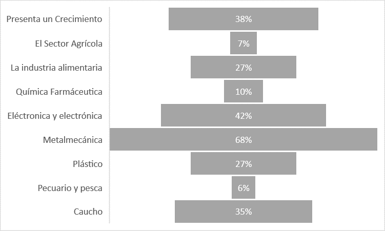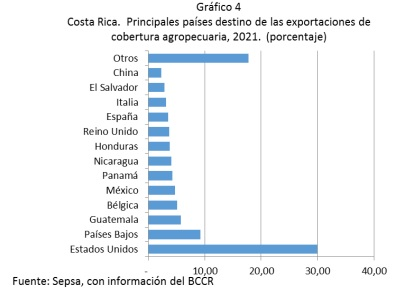
Innovacion tecnologica
Sus avances son: plataformas bio computacional para la identificación de protesta del Coronavirus, protocolo para fabricación de preparaciones inyectables, prototipos de respiradores ventiladores mecánicos neumáticos. Son algunos de los aportes dados por el país en contra de la pandemia. La finca de la Estación Experimental del INTA en Quepos, tiene un área aproximada de 13.5 has. La estación está ubicada en el Pacífico Central, en la comunidad de Naranjito Quepos, y colinda con la Agencia de Servicios Agropecuarios del M.A.G. Específicamente se ubica entre las siguientes coordenadas planas Lambert Sur: 596990-376662 con 597341-377371 y 597220-377480 con 596828-376774
En cuanto a la zona agroecológica, es Zona Tropical muy húmeda, con precipitación promedio de 3800 mm. Los cultivos predominantes de la región son Plama africanca, gandería, arroz y agricultura familiar enfocada en maíz, frijol, plátano y yuca.
Energias renovables
En 2022 según la revista electrónica ¨La república ̈ se busca convertir a Puntarenas en la primera ciudad autosuficiente en energía eléctrica de Costa Rica, Iniciaron la instalación de 30 plantas solares estas generan un estimado diario de 30 x 1,5 kW de potencia x 5 horas 225 Kilovatios hora de energía diaria, 6,75 Megavatios hora por mes y 84 Megavatios hora por año, cuyo costo a tarifa actual sería de C 5 millones de colones. En el lapso de 25 años, esos pobladores del proyecto piloto se habrán ahorrado 125 millones de colones, un monto seis veces superior a lo donado, dinero que sabrán utilizarlo para su propio bienestar.
La primera fase del proyecto consiste en generar electricidad para todas las viviendas de Puntarenas suficientes para el autoconsumo de cada vivienda y la segunda fase es generar la energía suficiente para el consumo nocturno. Existen cerca de 20 mil viviendas que van a requerir 20 mil mini plantas solares y el costo estimado se estima en 30 millones de dolares.
En la segunda fase del proyecto se podrá generar energía durante el dia en el orden 20,000 x 2 KW x 5 horas = 200,000 KW hora diarios, 6 GW hora mensuales y 72 GW hora anuales. La tercera fase se tratará de dar energía renovable para el uso nocturno del puerto ya sea por paneles solares, eólicas o térmicas
Uso de energias actualmente
Actualmente Puntarenas cuenta con varias fuentes de energía renovables, contando con Paneles solares, turbinas y hidrográfica, Puntarenas cuenta con paneles solares y energía hidrográfica gracias a la empresa ICE, es una empresa que se dedica a la produccion de energias renovables, también gracias a la empresa de Pelto que fabrica turbinas eólicas para la producción de energía renovable en Puntarenas.
Puntarenas genera un total de 44 kW con las dos plantas de Paneles solares estos están planeados para que duren por lo menos 60 años desde su construcción. El proyecto anteriormente mencionado ya está casi terminado dando energía renovable a varios hogares de Puntarenas.
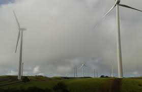
Matriz Energetica
¿Qué es una matriz energética? Es la sumatoria porcentual de todos los recursos naturales de los que se extrae la energía para transformarla en electricidad y llevarla a hogares, comercios e industrias.
En Costa Rica, este conjunto es administrado y monitoreado por el ICE, mediante su Centro Nacional de Control de Energía (CENCE) y el Sistema Eléctrico Nacional (SEN).
Deporte
El deporte más practicado en Puntarenas, Costa Rica, varía, pero el fútbol es extremadamente popular en todo el país, incluyendo la región de Puntarenas. Puntarenas cuenta con su propio equipo de fútbol llamado Puntarenas F.C de Costa Rica Uno de los deportistas más conocidos de Puntarenas, Costa Rica, es el futbolista Bryan Ruiz. Ha sido una figura destacada en la selección costarricense y ha jugado en varios equipos internacionales a lo largo de su carrera. Puntarenas es conocida por sus deportes acuáticos debido a su ubicación costera. Surf, pesca deportiva, vela y buceo son populares en la zona. También puedes encontrar actividades terrestres como fútbol y baloncesto en la región.
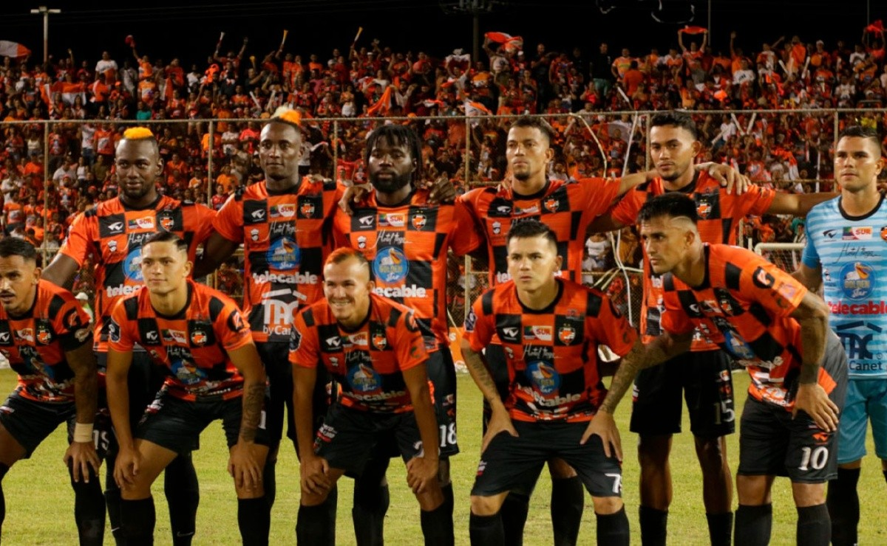
Especias endémicas en peligro de extinción
Según la Lista Roja de Especies Amenazadas de la UICN, Costa Rica tiene 1.856 especies en peligro de extinción. Esto representa el 18% de todas las especies conocidas en Costa Rica. Las principales causas de la extinción son la pérdida de hábitat, la caza furtiva y la contaminación.
Algunas especies mas amenazadas son
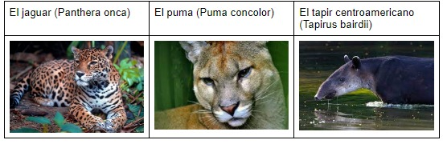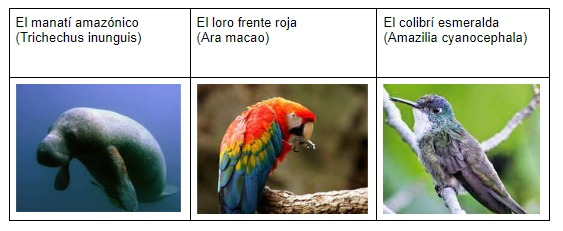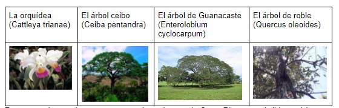
Leyes que regulan la protección de la biodiversidad en Costa Rica.
Ley de Biodiversidad (Ley No. 7788)
La ley tiene por objeto conservar la biodiversidad y el uso sostenible de los recursos en Costa Rica, así como distribuir en forma justa los beneficios y costos derivado. Promueve la participación activa de todos los sectores sociales, prevé mecanismos de participación en evaluaciones de impacto ambiental y planes, programas y políticas y establece acciones populares y otras medidas de acceso a la justicia para la defensa y protección de la biodiversidad.
La ley aspira a promover la educación y la conciencia pública sobre la conservación y la utilización de la biodiversidad.
La educación biológica deberá ser integrada dentro de los planes educativos en todos los niveles previstos, para lograr la comprensión del valor de la biodiversidad y del modo en que desempeña un papel en la vida y aspiración de cada ser humano.
proyecto plasma
El Tecnológico de Costa Rica (TEC), por medio de su Laboratorio de Plasmas para Energía de Fusión y Aplicaciones, lidera un proyecto que busca que los residuos hospitalarios sean desintegrados con tecnología de plasma. Esto lo ejecutan por medio del proyecto denominado: “Mitigación de las infecciones hospitalarias y reducción del impacto ambiental de los desechos médicos en el Hospital Nacional de Niños mediante tecnología basada en el plasma”.
“La gente tiene la idea de que el plasma se usa solo para propulsión espacial, y no es así. Estamos demostrando que se pueden hacer un montón de cosas... Aparte de explorarlo como futura fuente de energía, trabajamos con plasma para los sectores industrial, médico y agrícola”, explicó Vargas. Estas soluciones se elaboran con plasmas fríos (entre 25 °C y 750 °C). Los logrados con el stellarator, como son a altas temperaturas, pueden llegar a millones de grados centígrados. Plasmas fríos son los que contiene, por ejemplo, una vela o un fluorescente, mientras que los calientes están presentes en el Sol o en los rayos. Materia versátil. Desde el área de la medicina, una de las iniciativas en las que trabajan consiste en el uso de plasma en procedimientos odontológicos. El proyecto que inició desde 2020, se desarrolla en conjunto con el Hospital de Nacional de Niños y el Organismo Internacional de Energía Atómica (OIEA); este último, ante la importancia de la iniciativa, donó una antorcha de plasma para un gasificador de residuos hospitalarios al TEC, con el fin de que la iniciativa pueda avanzar con mayor celeridad En total, la OIEA ha donado al 150 mil dólares para la compra de la antorcha de plasma; más, 18 mil dólares. Este último monto será utilizado para realizar la instalación eléctrica necesaria para que la proyecto tecnología donada pueda ser utilizada en el TEC.
“La Organización Mundial de la Salud (OMS) ha señalado que los desechos sanitarios representan una de las tasas más altas en la generación de lesiones y propagación de infecciones. Y en respuesta a estos dilemas de salud y medio ambiente, el Laboratorio de Plasmas para Energía de Fusión y Aplicaciones del Instituto Tecnológico de Costa Rica busca mejorar la calidad de vida tanto de los pacientes como del personal del Hospital Nacional de Niños de Costa Rica con la implementación de tecnología basada en plasma. ”, afirmó el científico costarricense, Iván Vargas, De esta manera, de acuerdo con Vargas, quien además es el Coordinador del Laboratorio, la iniciativa tiene como uno de sus objetivos promover un adecuado tratamiento de los residuos hospitalarios e impactar positivamente la protección del medio ambiente costarricense.
Turismo ecológico
Turismo ecológico o ecoturismo es “aquella modalidad turística ambientalmente responsable consistente en viajar a, o visitar áreas naturales relativamente sin disturbar; con el fin de disfrutar, apreciar y estudiar los atractivos naturales de dichas áreas, así como cualquier manifestación cultural (del presente y del pasado) que pueda encontrarse ahí” (Rojas, 2006, p.1). Este tipo de experiencia turística tiene la virtud de ser “un proceso que promueve la conservación, tiene bajo impacto negativo ambiental y cultural, y propicia un involucramiento activo y socioeconómicamente benéfico de las poblaciones locales” (Rojas, 2006. p.1).
Se pueden mencionar las siguientes como actividades ecoturísticas: Presenciar la liberación de tortugas marinas recién nacidas, recorrer senderos de una reserva de bosque comunal que forma parte de un corredor biológico, visitar cavernas, cataratas, ríos, volcanes en medio de paisajes inexplorados, descubrir y admirar los rasgos, cultura y arte de las etnias bribrí o guaymí o navegar en Manzanillo al lado de los delfines son algunas de las posibilidades que se ofrecen al turista aventurero y amante de la naturaleza. Este tipo de turismo se ha mezclado muy bien con el turismo rural comunitario, pues las organizaciones comunitarias han desarrollado actividades alrededor de las fortalezas naturales que poseen sus comunidades, tratando de evitar impactos negativos en esos ambientes, promoviendo la paz con la naturaleza, al tiempo que generan recursos económicos para sus pobladores.
De acuerdo con Lizano (1998), el modelo de ecoturismo logra, entre otros beneficios, una amplia dispersión de la actividad turística, se impacta positivamente el factor de derrame económico en la población local y se asigna valor real y potencial a los recursos naturales y culturales. Y es a partir de los factores asociados a este modelo que se gestó una imagen turística que le ha valido a Costa Rica el reconocimiento como país líder en el desarrollo del ecoturismo en el plano mundial.
Distribución y clasificación de bosques
Costa Rica tiene una gran variedad de bosques, que se encuentran en diferentes altitudes y zonas climáticas. Los bosques más comunes son los húmedos tropicales, los nublados, los secos, los de galería y los de manglar.
Los bosques húmedos tropicales se encuentran en las tierras bajas, y son los más biodiversos. Los bosques nublados se encuentran en las montañas, y son más fríos y húmedos que los bosques húmedos tropicales. Los bosques secos se encuentran en el norte y el este del país, y son menos biodiversos que los otros tipos de bosques. Los bosques de galería se encuentran a lo largo de los ríos y arroyos, y son similares a los bosques húmedos tropicales. Los bosques de manglar se encuentran en las zonas costeras, y son tolerantes a la sal.
Todos los tipos de bosques de Costa Rica son importantes para la biodiversidad del país, y el gobierno está trabajando para protegerlos.
leyes que regulan la proteccion de la biodiversidad en costa rica
Costa Rica es un país con una gran biodiversidad, y el gobierno ha tomado medidas para protegerla. Algunas de las leyes más importantes que regulan la protección de la biodiversidad en Costa Rica son:
Ley de Conservación de la Vida Silvestre (Ley No. 7317): esta ley tiene por objeto proteger la vida silvestre de Costa Rica, incluyendo plantas, animales y hongos. La ley establece un sistema de áreas protegidas, regula el comercio de vida silvestre y prohíbe la caza y la pesca furtivas.
Ley Forestal (Ley No. 7575): esta ley tiene por objeto proteger los bosques de Costa Rica. La ley establece un sistema de áreas protegidas, regula el uso de los recursos forestales y prohíbe la tala ilegal.
Ley de Biodiversidad (Ley No. 7788): esta ley tiene por objeto proteger la biodiversidad de Costa Rica, incluyendo su uso sostenible. La ley establece un sistema de áreas protegidas, regula el acceso a los recursos genéticos y promueve el uso sostenible de la biodiversidad.